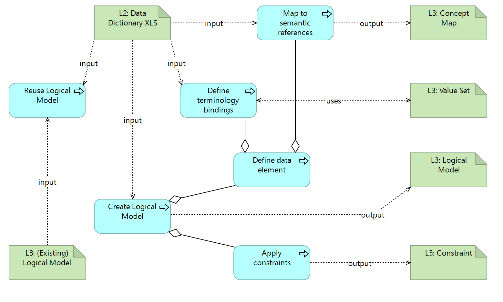

DRAFT SMART Guidelines L3 SOP
0.2.1 - CI Build

DRAFT SMART Guidelines L3 SOP
0.2.1 - CI Build

DRAFT SMART Guidelines L3 SOP, published by TBD. This guide is not an authorized publication; it is the continuous build for version 0.2.1 built by the FHIR (HL7® FHIR® Standard) CI Build. This version is based on the current content of https://github.com/WorldHealthOrganization/smart-ig-starter-kit and changes regularly. See the Directory of published versions
Logical models represent the data structures in the Digital Dictionary. This is a computable representation that is independent of any physical limitation like which FHIR Release or profile version is used. The use of FHIR loogical models allows metadata to be structured, computable, and interoperable, for the purposes of governance and checking.
Creating a FHIR logical model entails capturing the elements in the Data Dictionary, with their description, terminology and cardinality constraints.
Logical models relate to other models in 3 aspects:
Each Logical Model is defined by the following data:
input/models or fsh/modelsThis is the overview of the activities and related artifacts used:

Some of the data entries are commons.
If an existing model is found, it is possible to
For example, “Client Registration” is a dataset that is similar across different vaccination processes. L3 authors may create a “Client Registration” logical data model with the common elements and create specific models for each antigen with any specific questions.
Inheritance is preferred for consistency, but the advantage should be checked against the dependency added - if the model that is being authored is expected to increasingly differ from the “parent” model, it may be best to consider a specialization or a new model.
Another possibility is the use of common structures - for example person identification - with given and family names, identifier(s), etc. These can be used as types or subsets of a logical model.
L3 authors should take into consideration that reused models are version-sensitive and any changes should take this versioning into consideration.
When reusing an existing model, L3 authors are recommended to produce a UML-like diagram or any other illustration that depicts this reuse.
The Data models in the L3 are associated with a data structure for exchange or for a given process. For example “capture vaccination data”. L2 authors are expected to follow that rule: one tab is assumed to be one data structure, i.e. a logical data model.
This is the “atomic” unit of exchange or use in the L3. Some factors may influence the split of a logical model into several functional blocks, besides the specialization, reference and usage described above. For example:
The logical model name has the name of the tab. Logical model should conform to the SGLogical model profile.
Creating the logical model from a DAK consists in creating the data structure, linking the elements to the common concept identifiers or, if that is not possible, to the internal unique concept identifiers (e.g. DE1, etc.). Additionally, assigning valuesets (creating them when needed), and capturing any constraints that are persent in the L2.
To start creating the logical model, an intake validation is useful, although it can be done simultaneouslty done with the editing of the logical model:
For each line in the tab, there shall be one data element in the logical model (represented here by differential.element[*]):
element[*].code[WHOCommon].Every element SHALL have a WHO identifier e.g. TB.A.DE.1.
differential.element[*].short): same as element labelthis makes the logical model tree easier to read, with meaningful names in the tree, while the mapping to the “internal” element ids like
DE1.3are persisted as a mapping.
Description and Definition: differential.element[*].definition
Multiple Choice Type (if applicable): This means the element may have several possible values (as in a multiple-choice question). This corresponds to a * in cardinality.
differential.element[*].type- TO DO: Logical data types should be defined
Input Options: is captured in the bindings
Input Option Groupings: this is a grouper for the rows that have a common group.
Quantity Sub-type (integer, decimal, duration)
Calculation
differential.element[*].commentOptionally, as Invariants / constraintsRequired is captured in cardinality
code[WHO] = IMMZ.Z1.DE9For bindings, check whether the value set already exists in an upstream package.
When adding valuesets, the binding strength should be considered:
Semantic mapping is done with ConceptMaps, establishing the relationship between the DAK elements and reference terminologies, central dictionary, or other DAKS.
| Tool | Usage | Doc |
|---|---|---|
| Sushi | Create LMs with fsh syntax | HL7 Spec Sushi Documentation |
SMART Guidelines - Immunizations (Measles): Logical Models